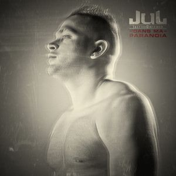
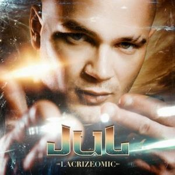
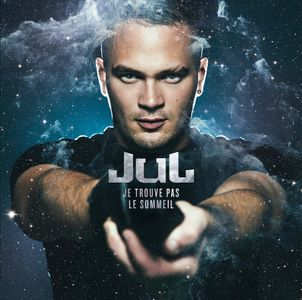

Dans ma paranoia, 24/02/2014
3 artistes en feat sur le projet (voir)
- Kalif Hardcore
- Soso Maness
- Kamikaze

Pour l'écouter :

- Winners
- Malade (feat. Kalif Hardcore)
- Dans mon del
- Grillé
- J’oublie tout
- Au quartier
- Jeune de cité (feat. Soso Maness)
- Sort le cross volé
- N’importe quoi
- Dans ma paranoïa
- Tu la love
- T’es pas le seul (feat. Kamikaze)
- C’est trop
- Audi volée (feat. Kalif Hardcore)
- Tout seul
- Le sang
- Mon son vient d’ailleurs
3 artistes en feat sur le projet (voir)
- Kalif Hardcore
- Soso Maness
- Kamikaze

Pour l'écouter :
Lacrizeomic, 16/06/2014
7 artiste en feat sur le projet (voir)
- Ghetto Phénomène
- Houari
- Saiah (FRA)
- Font-Vert
- Kalif Hardcore
- Kamikaz
- Soso Maness

Pour l'écouter :
- Anti-BDH
- Ça veut ton cash
- Briganté
- Je profite
- Loin
- L’histoire
- N’imite pas
- On survit
- Posé à la place 2
- Pour un rien
- Regardes pas de travers
- Ça me dégoûte
- Sens interdit
- T’as coulé
- Terter (2014)
- Au top
- On squatte le béton
- Neymar
7 artiste en feat sur le projet (voir)
- Ghetto Phénomène
- Houari
- Saiah (FRA)
- Font-Vert
- Kalif Hardcore
- Kamikaz
- Soso Maness

Pour l'écouter :
Je trouve pas le sommeil, 8/12/2014
10 artistes en feat sur le projet (voir)
- Cheb Khalass
- Mister You
- Le Rat Luciano
- Simo
- Bilk
- Friz
- Houari
- Kalif Hardcore
- Kamikaz
- Soso Maness
- Veazy

Pour l'écouter :
- Message aux rageux
- J'm'évade
- Ma Life
- Arrête de parler
- Je trouve pas le sommeil
- Señora
- Le regard des gens (Ft. Cheb Khalass)
- La fusée
- Marseille-Paris (Ft. Mister You)
- Nique-le
- Seul au monde
- Dans l'game
- Mets les en I (Ft. Le Rat Luciano)
- Qu'ils me laissent
- Lacrizeomic
- Poto où t'es ? (Ft. Simo)
- T'as le boule
- Trop de vice
- Pourquoi tu me fais le gros (Ft. Bilk, Friz, Houari, Kalif Hardcore, Kamikaz, Soso Maness & Veazy)
- Vida Loca
10 artistes en feat sur le projet (voir)
- Cheb Khalass
- Mister You
- Le Rat Luciano
- Simo
- Bilk
- Friz
- Houari
- Kalif Hardcore
- Kamikaz
- Soso Maness
- Veazy

Pour l'écouter :